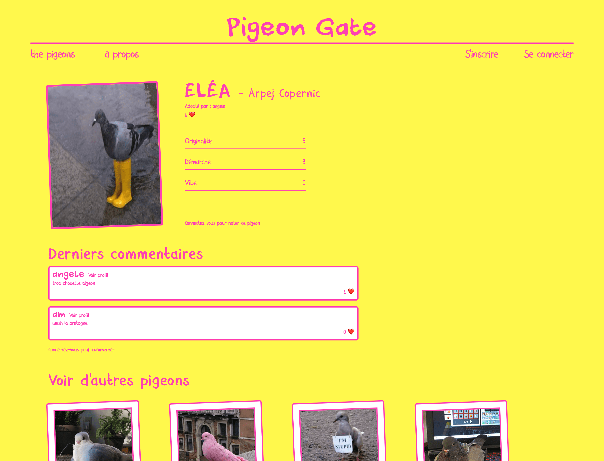
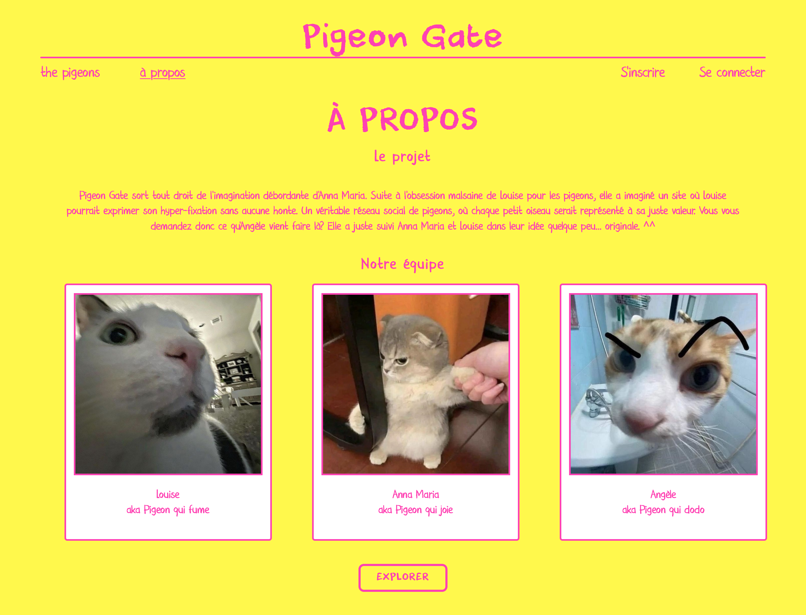
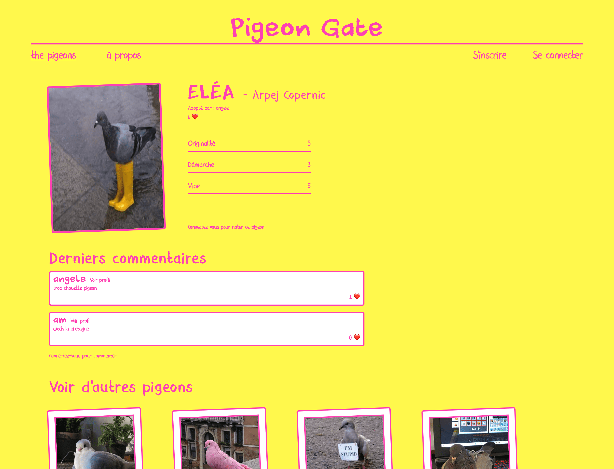
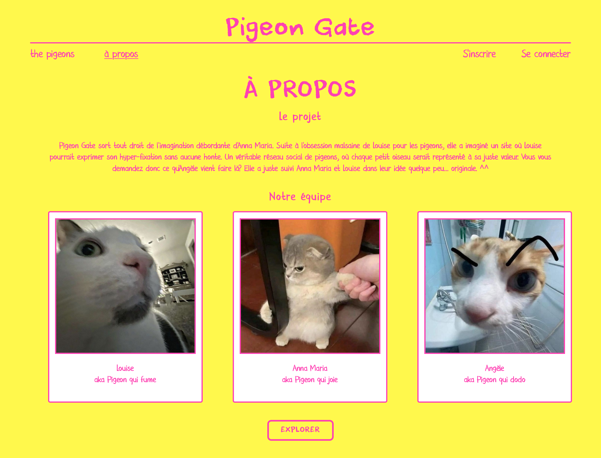
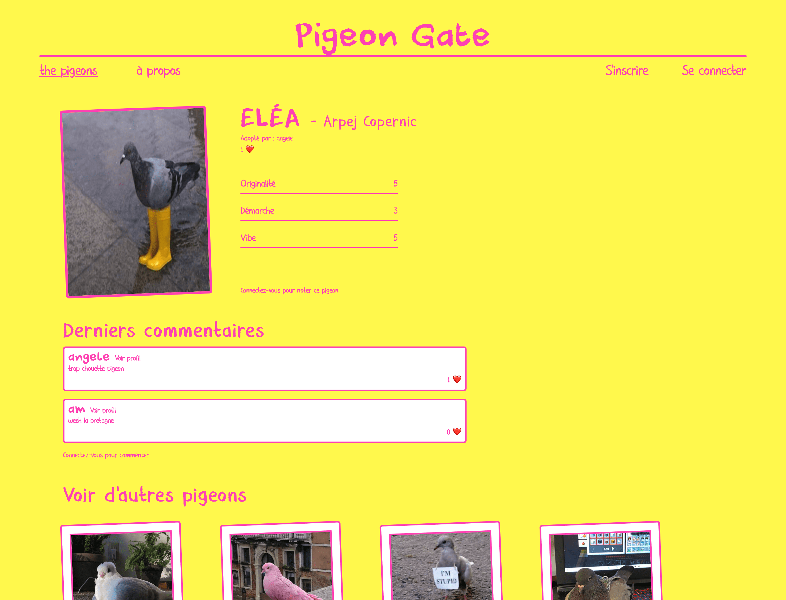
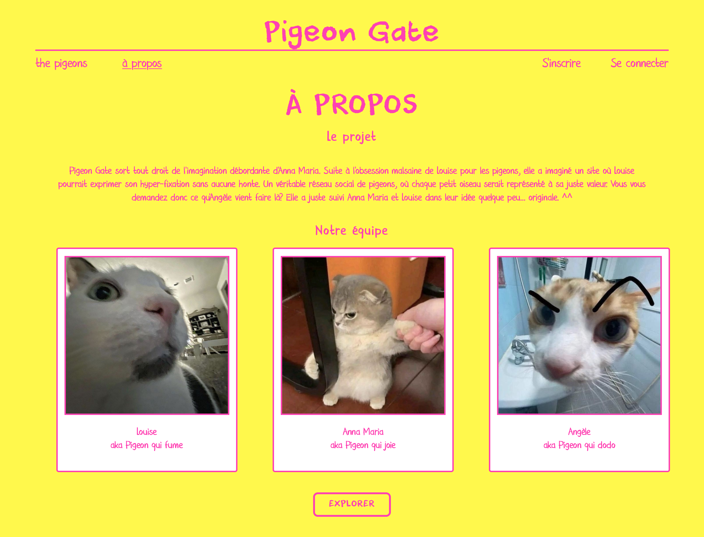

Discover a unique social network to catalog the pigeons in your daily life
and
connect with passionate pigeon fanciers!
Project type: Social network (website)
Date: 2024
Context: Student project at IMAC
Technologies: Flask (Python), HTML, CSS, JS
Description:
Pigeon Gate is the brainchild of Anna Maria's overflowing imagination. Following Louise's unhealthy obsession with pigeons, she envisioned a site where Louise could express her hyper-fixation without shame. If you're wondering what Angèle is doing there, she simply decided to join Anna Maria and Louise's team to add her own touch to their somewhat... unusual idea.
This project is a true social network for pigeons, where every little bird is showcased for its true value. You can sign up or log in, view what other users have posted, comment on and like their birds. You can also view their profiles, post your own pigeons, and rate them!

